Moodle is the learning management system Monash University uses across every faculty for unit content, assessments, and student progress. Each faculty had built its own layouts, navigation, and terminology independently, producing inconsistent structures, higher decision load for teaching staff, and uneven student experiences. As lead UX product designer, I designed the governed learning model that replaced faculty-specific layouts with one shared core system, working within a cross-functional team that included a product owner, two business analysts, a researcher, and a team of developers.
Before I joined the project, the team had completed a Discover & Define research phase covering a review of 100+ Moodle units across faculties, 14 student focus groups with 56 students, 24 staff mini-groups with 50 staff, and 7 landscape interviews with staff from Australian and overseas universities. I was brought in to translate those findings into a design system.
To build my own understanding of the problem space, I independently reviewed units across faculties, capturing screenshots to document structural variation firsthand. I then looked outward, reviewing how other Australian universities structure their LMS environments: Victoria University on Brightspace, ANU on Canvas, and UQ on Blackboard.
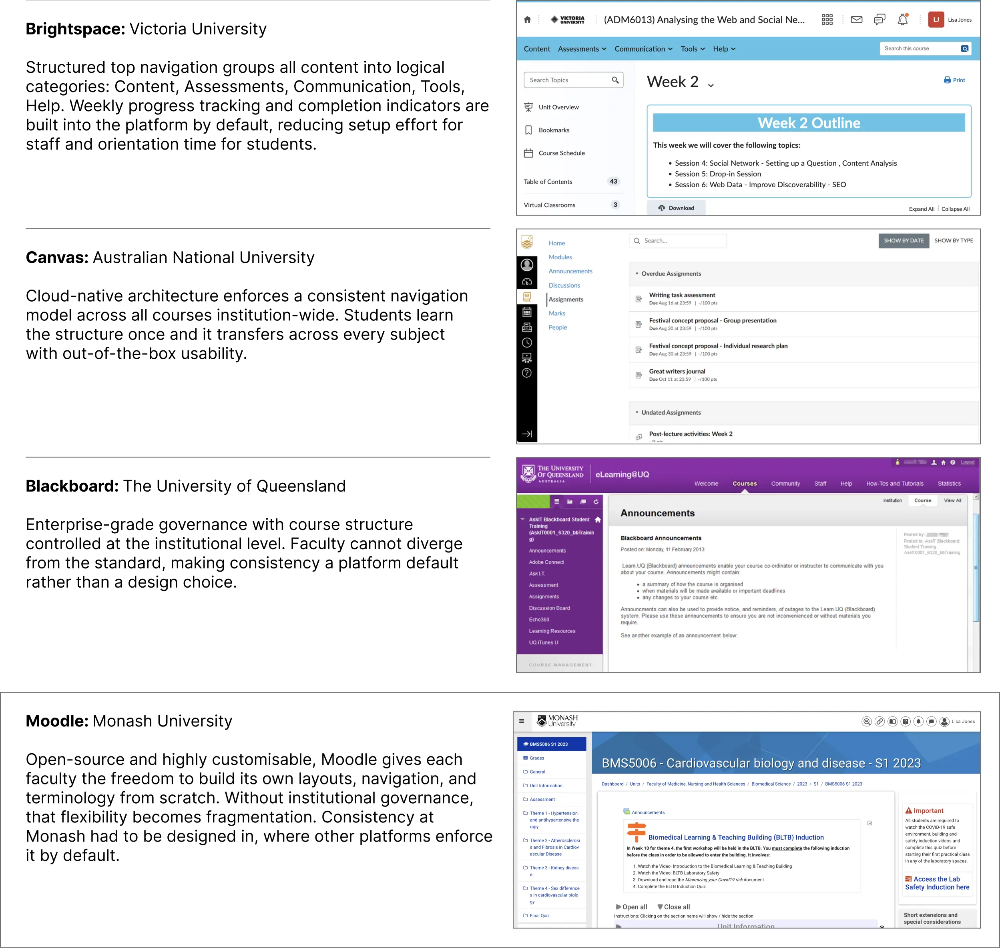
Not all fragmentation problems are equal. Monash's situation was shaped in part by the platform itself. The other three institutions get structural consistency from their platform by default; open-source Moodle leaves that entirely to each faculty.
Moodle is highly customisable: every faculty can build its own layouts, navigation patterns, and terminology from scratch. That flexibility is exactly what allowed fragmentation to take hold, and it meant the solution was never going to be a simple interface fix. It required compensating for architectural flexibility through a governed template system.
Monash's Moodle environment evolved faculty by faculty. Each area owned its own unit layouts, navigation patterns, and terminology.
Over time, this created wide structural variation across units. Students moving between subjects encountered different ways of finding learning materials, assessments, and progress indicators. Teaching staff rebuilt structures manually, with no shared baseline to guide consistency.
The friction was not driven by course content. It was driven by structure.
Observed conditions included: inconsistent navigation and hierarchy; learning and assessment content appearing in different locations; differing terminology across faculties; no shared structural pattern to support scale or governance.
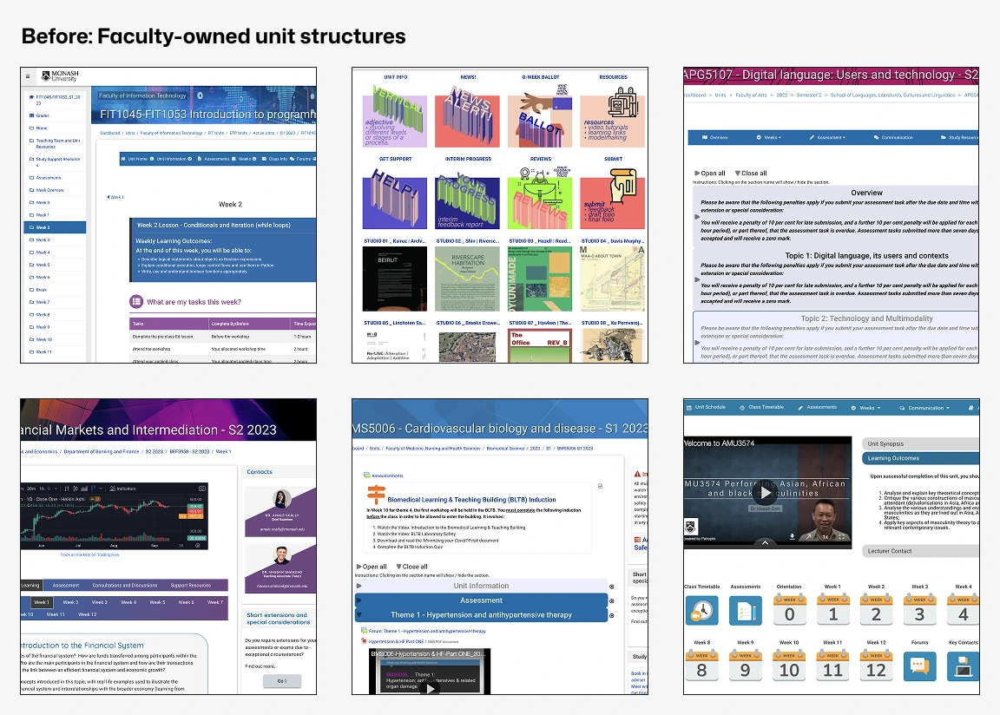
The prior research phase identified consistent friction points across disciplines through focus groups with 56 students. Mapping the routine tasks a student moves through in a unit, from navigating to it through to checking progress, showed each one breaking in a different way: unclear structure, inconsistent locations, hidden assessments, an unclear submission process, and no visibility on how they were tracking. These issues were confirmed through my own unit audit and stakeholder walkthroughs.
The pattern pointed to a systemic issue rather than isolated usability defects.
There's an unwritten rule that it takes 2 to 4 weeks to relearn Moodle each time a student starts a new unit.
Monash Moodle Evaluation, March 2023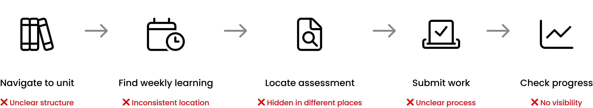
To translate these findings into a brief the team could act on, I benchmarked Monash's patterns against industry LMS conventions across six dimensions: navigation, hierarchy, assessment location, terminology, progress visibility, and customisation rules. That comparison defined exactly what the unified system needed to close.
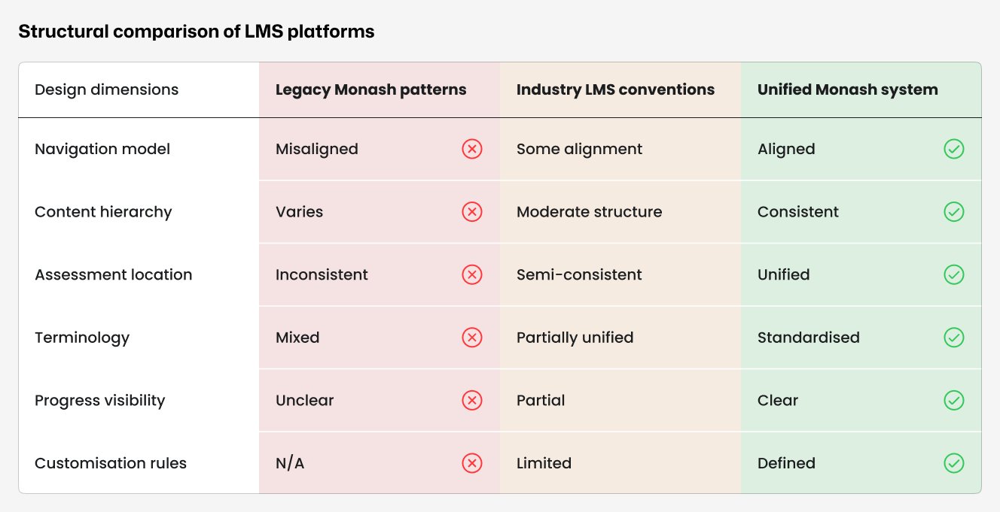
No single-page fix would hold at the scale of 10,000 units across every faculty. The system itself had to enforce consistency, because staff couldn't be relied on to choose it.
Addressing scale required a shift from designing individual pages to designing a system.
The research identified a telling pattern: when staff encountered navigation problems, they responded by adding more navigation: extra menu bars, quick links, custom sidebars. These workarounds could be effective locally but never addressed the root cause: there was no coherent system for organising content in the first place. More navigation on top of broken structure just created more conflict.
The solution went in the opposite direction. Rather than adding flexibility, we removed it in the places that mattered most, locking in the consistency other platforms enforce by default.
Not in sidebars, not embedded in weekly topics, not duplicated across multiple locations. One place, every unit.
Scheduling information is separated from learning content instead of competing with it.
Left and right sidebars were the primary source of navigation conflict. Removing them eliminated it.
Assignment submission is always in the same place, ending the student hunting behaviour identified in research.
These decisions sat inside a wider tension that shaped every call we made: faculty autonomy, student consistency, and governance requirements all pulled in different directions, and no single one of them could simply win out over the others. The resolution was a governed template, structure fixed, content flexible, sitting at the centre of those competing forces.
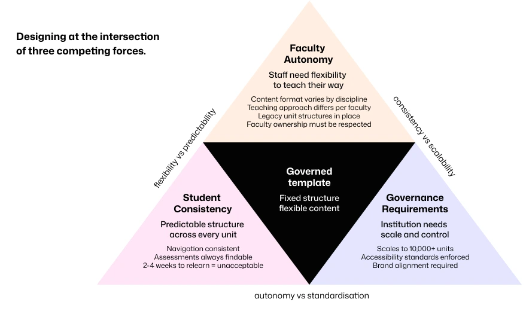
A governed template established consistent placement for learning content, assessments, and progress indicators. Units inherited this structure rather than rebuilding it. The critical structural decisions (fixed assessment placement, removal of sidebars, and a three-panel homepage dashboard) were enforced through the template itself rather than through guidelines staff could choose to ignore.
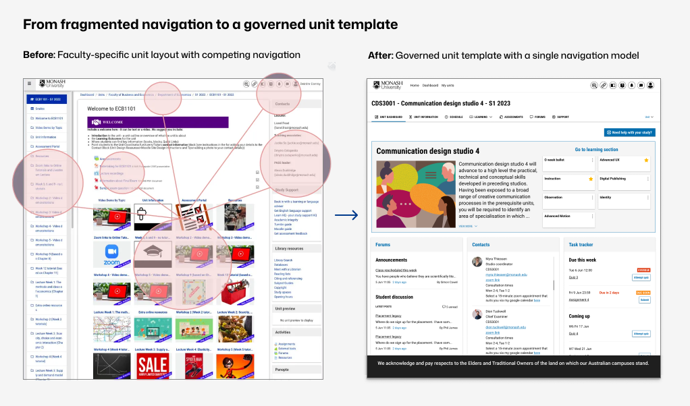
The template expressed a complete unit structure: a consistent homepage, predictable weekly learning modules, dedicated assessment zones, and clear orientation and progress cues. This reduced variation without constraining teaching approach.
These zones directly addressed the friction points identified in research: students no longer had to search for assessments, progress indicators, or weekly content because the template put them in the same place every time.
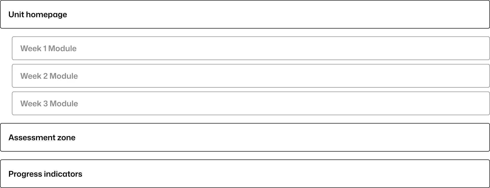
Templates were applied across multiple disciplines to validate use beyond a single context. The structural framework remained constant while content varied by faculty, delivery mode, and pedagogy.
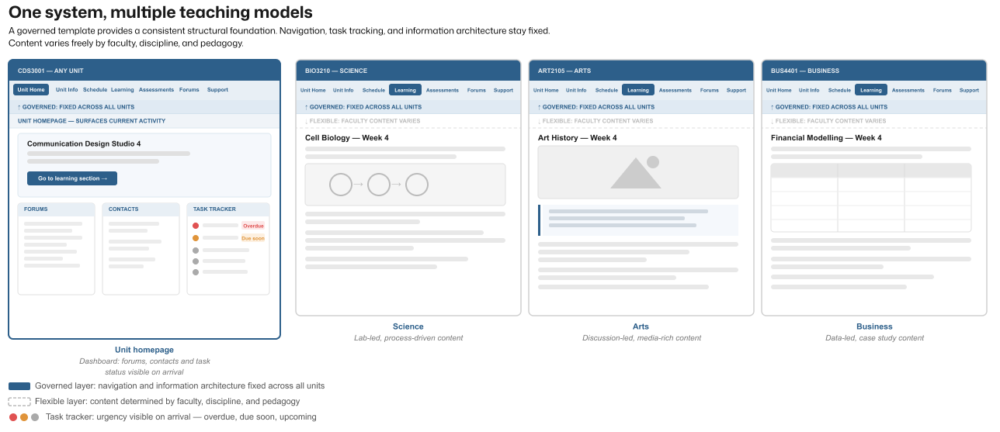
A reusable learning journey model had been defined to replace inconsistent terminology across faculties such as "before, during, after class." My role was designing the visual system that expressed this model within the template, and iterating on it through structured feedback sessions with staff and students.
The coursework template handled twelve-week linear units well. But a significant portion of Monash's units don't follow that pattern. Architecture studios run in stages with student streams. Performance units split by instrument group. Business intensives run day by day across fieldwork trips.
How these units would work structurally was defined by stakeholders and faculty leads. My role was translating that model into the template system, ensuring the flexibility framework held together visually and that the Own-time, Real-time, Wrap-up learning journey remained legible across fundamentally different teaching contexts.
The challenge was that the same governed structure had to accommodate studios, fieldwork, performance streams, and research projects without requiring a separate template for each. The governed structure held across all of them.
Templates were refined through two rounds of structured feedback sessions with students and teaching staff, tested against real course scenarios across multiple disciplines.
The first round surfaced two significant problems. Neither learning journey naming option was working. "Own-time, Real-time, Consolidate" helped students plan their time but gave no sense of learning progression. "Discover, Apply, Consolidate" appealed to staff but felt abstract to students. The word "consolidate" specifically failed with both groups. The dashboard also tested poorly: the task tracker was described as "very large and looming" with status colours that were "garish," lecturer contact details were missing entirely, and announcements and forums were overcrowded and given too much visual priority.
Those findings drove two concrete changes. The learning journey was renamed Own-time, Real-time, Wrap-up, resolving the terminology problem directly without losing the structural logic. The dashboard was reorganised into three equal panels surfacing forums, contacts, and a reduced task tracker together, with content hierarchy rebalanced around the week preview rather than the tracker.
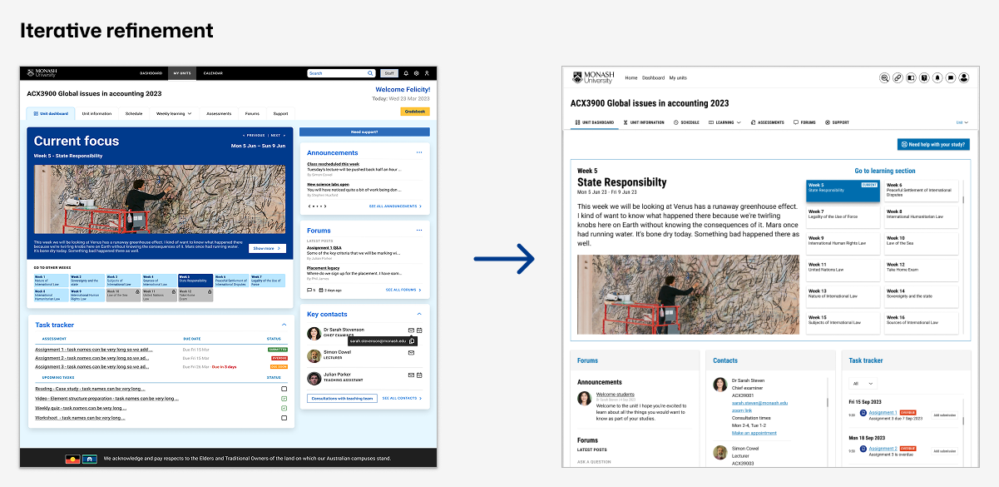
The second round was coordinated by the research team across five student sessions with approximately 35 students and seven staff sessions with approximately 50 staff, including Faculty Champions, the SAS team, and the Elevate team. Testing confirmed the dashboard and learning journey redesigns were working. The task tracker and completion states were received positively. Remaining feedback focused on detail-level refinements: collapsible subsections, due date visibility within tasks, and icon adjustments.
Templates were signed off by stakeholders following the second round. Annotated Figma files were produced for the development team to support accurate implementation. Staff onboarding and training was handled by a separate department.
The initial brief directed exploration away from Monash's existing visual system. Late in delivery, a mandate required full alignment with central brand standards. Visuals were updated to meet this requirement while preserving structure and timelines.
The structural decisions remained intact throughout. Brand alignment was applied to the visual layer without requiring changes to information architecture or template logic.
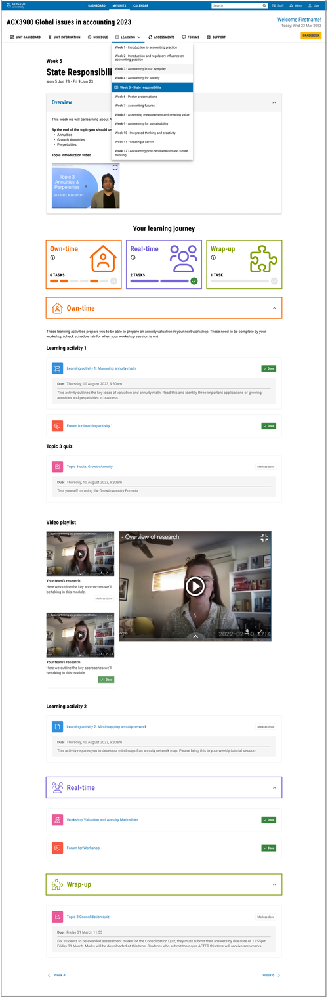
The governed template was piloted across 50 units in the first wave, tested across all campuses before institutional commitment. It then rolled out across approximately 10,000 active courses, reaching around 86,000 students across all Monash faculties.
That scale was only possible because the system was built for it. A template that required faculty-by-faculty negotiation or custom rebuilding could not have moved at that speed or that volume. Governance was the precondition for reach.
Your design will be reproduced EVERYWHERE. You put your artistry into a dull place and it is so much better for it.
Your efforts have gone above and beyond achieving our goal of making Moodle a contemporary platform that redefines learning and teaching.
Lisa has a unique ability to blend creativity with user-centric design principles, prioritising the end user's experience.
Beyond the initial rollout, the template was designed to keep working: a governed core of templates, the learning journey, and approved components feeds into an ongoing review process, so new teaching models and platform updates can be absorbed without requiring structural redesign.
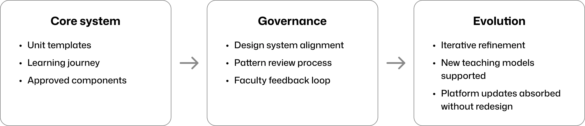
Consistency functions as a service in large institutions. A single student moving between units, faculties, or campuses should not have to relearn how to find their assessments. A single staff member setting up a new unit should not have to make structural decisions that should already be resolved.
The most durable outcome of this project was not any individual screen. It was a system that could absorb 10,000 courses without breaking, and still leave room for a studio unit in architecture to work differently from a twelve-week law unit.